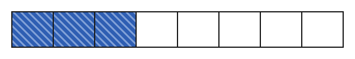

Was ist ein Bruch?
Mit einem KI-Tutor lernen
Ein KI-Tutor erklärt dir diese Seite und hilft dir bei den Übungen. Wähl deinen Assistenten:
Mit Claude öffnen Mit ChatGPT öffnen Mit Mistral Vibe öffnen
Du nutzt dein eigenes Konto beim Anbieter. Der Assistent ist kein Angebot von lernapps.net: lernapps liefert nur Inhalte und Übungen. Die Wahl gilt für alle Seiten, nur auf diesem Gerät.
Teile vom Ganzen
Nach dieser Seite kannst du einen Bruch als Teil eines Ganzen deuten und darstellen. Du kennst das schon aus dem Alltag: Eine Pizza wird in Stücke geschnitten, und jedes Kind bekommt einen Teil davon. Mit einem Bruch kannst du genau sagen, wie viel das ist. Du brauchst dafür nur die natürlichen Zahlen, die du schon kennst.
Zähler und Nenner
Ein Bruch braucht ein Ganzes. Hier ist das Ganze ein Streifen. Er wird in gleich große Stücke geteilt. Wichtig: Die Stücke müssen alle gleich groß sein, sonst stimmt der Anteil nicht.

Der ganze Streifen ist das Ganze. Er hat 8 gleich große Stücke, 3 davon sind gefärbt (blau gestreift). Die anderen 5 sind weiß.
Quelle: eigene Zeichnung. Lizenz: CC-BY-4.0.Für die gefärbten Stücke schreibst du einen Bruch mit zwei Zahlen, die durch einen Strich getrennt sind. Der Strich heißt Bruchstrich:
Die Zahl unter dem Bruchstrich sagt, in wie viele gleich große Stücke das Ganze geteilt ist: hier 8. Die Zahl über dem Bruchstrich sagt, wie viele dieser Stücke gemeint sind: hier 3 gefärbte. Du liest den Bruch „drei Achtel“. Achtel heißt: Das Ganze ist in 8 Stücke geteilt.
- Nenner
Der Nenner steht unter dem Bruchstrich. Er sagt, in wie viele gleich große Stücke das Ganze geteilt ist.
- Zähler
Der Zähler steht über dem Bruchstrich. Er sagt, wie viele dieser Stücke gemeint sind.
- Bruch
Ein Bruch ist ein Anteil von einem Ganzen. Er besteht aus Zähler und Nenner, getrennt durch den Bruchstrich.
Ein Streifen mit mehr Stücken ist nicht größer. Das Ganze bleibt gleich groß, nur die Stücke werden kleiner.
Selbst ausprobieren
Der Streifen unten ist das Ganze. Mit „Weniger Stücke“ und „Mehr Stücke“ änderst du den Nenner: in wie viele gleich große Stücke das Ganze geteilt ist. Tippe auf ein Stück, um es zu färben oder wieder zu entfärben: Die gefärbten Stücke sind der Zähler. Unter dem Streifen steht der Bruch, oben der Zähler, unten der Nenner. Zum Ausprobieren: Färbe ein Stück und ändere dann die Zahl der Stücke. Du siehst: Bei 2 Stücken ist ein gefärbtes Stück die Hälfte vom Ganzen. Bei 8 Stücken ist ein gefärbtes Stück viel kleiner. Je mehr Stücke es gibt, desto kleiner ist jedes einzelne.
0 von 8 gleich großen Stücken sind gefärbt. Der Bruch ist 0/8.
Ein Streifen ist das Ganze. Er ist in 8 gleich große Stücke geteilt. Wenn du 3 davon färbst, sind 3 von 8 Stücken gefärbt, und der Bruch heißt 3/8. Teilst du den Streifen in 4 Stücke und färbst 1, heißt der Bruch 1/4.
Ein Beispiel
Die Pizza
Eine Pizza ist in 8 gleich große Stücke geschnitten. Du isst 3 Stücke. Das Ganze ist die Pizza, sie hat 8 Stücke. Der Nenner ist also 8. Du hast 3 Stücke gegessen. Der Zähler ist also 3.
Du hast drei Achtel der Pizza gegessen. Was übrig ist, ist der Rest: 8 − 3 = 5 Stücke. Der Rest ist also fünf Achtel.
Übung
Aufgabe Nr. 1
Aufgabe Nr. 1
Der Streifen ist das Ganze und in 8 gleich große Stücke geteilt. Färbe den Bruch 1/8.
Lösung
1 gefärbte Stücke: der Zähler 1 sagt, wie viele der 8 Stücke gefärbt sind
Übung
Lösung
5/8 richtige Antwort
Das Ganze hat 8 gleich große Stücke (Nenner 8), 5 davon sind gefärbt (Zähler 5).
3/8
Hier hast du die weißen Stücke gezählt. Der Zähler zählt aber die gefärbten Stücke.
5/3
Der Nenner ist die Zahl aller Stücke, also 8, nicht die Zahl der weißen Stücke.
8/5
Hier sind Zähler und Nenner vertauscht. Der Nenner steht unten und zählt alle Stücke.
Der Nenner zählt alle gleich großen Stücke, der Zähler die gefärbten. Hier sind es 8 Stücke und 5 davon gefärbt.
Mehr dazu:
Übung
Drei Beispielaufgaben, jede mit ihrer Lösung:
Aufgabe Nr. 1
Die Tafel Schokolade ist in 11 gleich große Stücke geteilt. Davon gegessen: 10. Welchen Zähler hat der Bruch für den Rest?
Tipp
Wie viele der 11 Stücke bleiben übrig?
Lösung
- Das Ganze hat 11 gleich große Stücke, davon sind 10 gegessen.
- Es bleiben 11 − 10 = 1 Stücke übrig. Der Zähler des Rests ist also 1.
Richtige Antwort: 1
Aufgabe Nr. 2
Die Tafel Schokolade ist in 11 gleich große Stücke geteilt. Davon gegessen: 9. Welchen Zähler hat der Bruch für den Rest?
Tipp
Wie viele der 11 Stücke bleiben übrig?
Lösung
- Das Ganze hat 11 gleich große Stücke, davon sind 9 gegessen.
- Es bleiben 11 − 9 = 2 Stücke übrig. Der Zähler des Rests ist also 2.
Richtige Antwort: 2
Aufgabe Nr. 3
Die Tafel Schokolade ist in 5 gleich große Stücke geteilt. Davon gegessen: 1. Welchen Zähler hat der Bruch für den Rest?
Tipp
Wie viele der 5 Stücke bleiben übrig?
Lösung
- Das Ganze hat 5 gleich große Stücke, davon sind 1 gegessen.
- Es bleiben 5 − 1 = 4 Stücke übrig. Der Zähler des Rests ist also 4.
Richtige Antwort: 4